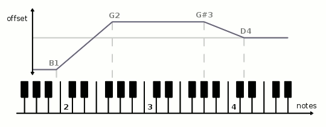
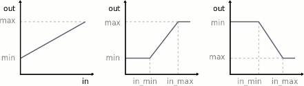

mididings Units¶
Units are the basic building blocks from which you can build your mididings patches.
Note
This document doesn’t describe what the documented functions do,
but rather what the objects they return do.
For example, the Transpose() function does not actually
transpose anything.
It merely returns an object that, when inserted into a
patch, will transpose incoming events.
Filters¶
- Filter(types, ...)
Filter events by type, see
here.
- PortFilter(ports, ...)¶
Filter events by port name or number. The ports argument can be a single port or a list of multiple ports.
- ChannelFilter(channels, ...)¶
Filter events by channel number. The channels argument can be a single channel number or a list of multiple channel numbers. System events (which don’t carry channel information) are discarded.
- KeyFilter(note_range)¶
- KeyFilter(lower, upper) None
- KeyFilter(lower=...) None
- KeyFilter(upper=...) None
- KeyFilter(notes=...) None
Filter note events by key (note number or note range). All other events are let through. The last form expects its argument to be a list of individual note names or numbers.
# match a note range KeyFilter('c1:a3') # match anything above middle C (note number 60) KeyFilter(lower=60) # match individual notes KeyFilter(notes=[60, 61, 'c5'])
- VelocityFilter(value)¶
- VelocityFilter(lower=...) None
- VelocityFilter(upper=...) None
- VelocityFilter(lower, upper) None
Filter note-on events by velocity. All other events are let through.
- CtrlFilter(ctrls, ...)¶
Filter control change events by controller number. The ctrls argument can be a single controller or a list of multiple controller numbers. All other events are discarded.
# remove all sustain pedal messages ~CtrlFilter(64)
- CtrlValueFilter(value)¶
- CtrlValueFilter(lower=...) None
- CtrlValueFilter(upper=...) None
- CtrlValueFilter(lower, upper) None
Filter control change events by controller value. All other events are discarded.
- ProgramFilter(programs, ...)¶
Filter program change events by program number. The programs argument can be a single program number or a list of program numbers. All other events are discarded.
- SysExFilter(sysex)¶
- SysExFilter(manufacturer=...) None
Filter system exclusive events by the data they contain, specified as a string or as a sequence of integers. If sysex does not end with
F7, partial matches that start with the given data bytes are accepted.Alternatively, a sysex manufacturer id can be specified, which may be either a string or a sequence of integers, with a length of one or three bytes.
All non-sysex events are discarded.
# match SysEx messages starting with 'F0 07 15 42' SysExFilter('\xf0\x07\x15\x42') # match SysEx messages for Yamaha devices SysExFilter(manufacturer=0x43)
For filters which accept an arbitrary number of arguments, each argument may also be a list or tuple of values. The following filters are equivalent:
PortFilter(1, 2, 3, 4)
PortFilter([1, 2, 3, 4])
PortFilter(1, 2, (3, 4))
Splits¶
- Split(mapping)
Split by event type, see
here.
- PortSplit(mapping)¶
Split events by input port, with mapping being a dictionary of the form
{ports: patch, ...}.config(in_ports = ['keyboard', 'piano', 'footswitch'], out_ports = ['synth', 'sampler']) ... PortSplit({ 'keyboard': Output('sampler', 1), 'piano': Transpose(-12) >> Output('sampler', 2), 'footswitch': Output('synth', 1), })
- ChannelSplit(mapping)¶
Split events by input channel, with mapping being a dictionary of the form
{channels: patch, ...}.
- KeySplit(threshold, patch_lower, patch_upper)¶
- KeySplit(mapping) None
Split events by key. Non-note events are sent to all patches.
The first version splits at a single threshold. The second version allows an arbitrary number of (possibly overlapping) note ranges, with mapping being a dictionary of the form
{note_range: patch, ...}.KeySplit('c3', Port('bass'), Port('piano'))
KeySplit({ ':c3': Port('bass'), 'c3:a#5': Port('piano'), 'a#5:': Port('strings'), })
- VelocitySplit(threshold, patch_lower, patch_upper)¶
- VelocitySplit(mapping) None
Split events by note-on velocity. Non-note events are sent to all patches.
The first version splits at a single threshold. The second version allows an arbitrary number of (possibly overlapping) value ranges, with mapping being a dictionary of the form
{(lower, upper): patch, ...}.
- CtrlSplit(mapping)¶
Split events by controller number, with mapping being a dictionary of the form
{ctrls: patch, ...}. Non-control-change events are discarded.
- CtrlValueSplit(threshold, patch_lower, patch_upper)¶
- CtrlValueSplit(mapping) None
Split events by controller value.
The first version splits at a single threshold. The second version allows an arbitrary number of (possibly overlapping) value ranges, with mapping being a dictionary of the form
{value: patch, ...}or{(lower, upper): patch, ...}.Non-control-change events are discarded.
- ProgramSplit(mapping)¶
Split events by program number, with mapping being a dictionary of the form
{programs: patch, ...}. Non-program-change events are discarded.
- SysExSplit(mapping)¶
- SysExSplit(manufacturers=...) None
Split events by sysex data or manufacturer id, with mapping being a dictionary of the form
{sysex: patch, ...}, and manufacturers being a dictionary of the form{manufacturer: patch, ...}(cf.SysExFilter()).Non-sysex events are discarded.
Modifiers¶
- Port(port)¶
Change the event’s port number.
# route to the second output port Port(2) # route to the port named 'synth' Port('synth')
- Channel(channel)¶
Change the event’s channel number.
- Transpose(offset)¶
- Transpose(octaves=...) None
Transpose note events by the given number of semitones or octaves.
- Key(note)¶
Change note events to a fixed note number.
- Velocity(offset)¶
- Velocity(multiply=...) None
- Velocity(fixed=...) None
- Velocity(curve=...) None
- Velocity(gamma=...) None
- Velocity(multiply, offset) None
Change the velocity of note-on events:
offset: add the given value to the event’s velocity.
multiply: multiply the event’s velocity with the given value.
fixed: set the event’s velocity to a fixed value.
curve: apply an exponential function
f(x) = 127 * (exp(p*x/127)-1) / (exp(p)-1). Positive values increase velocity, while negative values decrease it.gamma: apply a simple power function
f(x) = 127 * (x/127)**(1/p). Values greater than 1 increase velocity, while values between 0 and 1 decrease it.
Within mididings, velocity values may be (temporarily) greater than 127 or less than 1. When sending events through a MIDI output port, or by using the
Sanitize()unit, velocities greater than 127 will automatically be reduced to 127, and events with a velocity less than 1 will be removed.# reduce velocity of note-on events by an offset Velocity(-20) # increase velocity of note-on events by applying a curve Velocity(curve=1.0)
- VelocitySlope(notes, offset)¶
- VelocitySlope(notes, multiply=...) None
- VelocitySlope(notes, fixed=...) None
- VelocitySlope(notes, curve=...) None
- VelocitySlope(notes, gamma=...) None
- VelocitySlope(notes, multiply, offset) None
Change the velocity of note-on events, applying a linear slope between different notes. This can be thought of as a
Velocity()unit with different parameters for different note ranges, and is useful for example to fade-in a sound over a region of the keyboard.Both parameters must be sequences of the same length, with notes in ascending order, and one velocity parameter corresponding to each note.
# apply a velocity slope as seen in the graphic above VelocitySlope(notes=('b1','g2','g#3','d4'), offset=(-64, 32, 32, 0))
- VelocityLimit(min, max)¶
- VelocityLimit(min) None
- VelocityLimit(max=...) None
Limit velocities of note-on events to the given range.
# limit velocity values to a maximum of 100 VelocityLimit(max=100)
- CtrlMap(ctrl_in, ctrl_out)¶
Convert controller ctrl_in to ctrl_out, i.e. change the event’s control change number.
# convert sustain pedal to sostenuto CtrlMap(64, 66)
- CtrlRange(ctrl, min, max, in_min=0, in_max=127)¶
Linearly map control change values for controller ctrl from the interval [in_min, in_max] to the interval [min, max]. Any input value less than or equal to in_min results in an output value of min. Likewise, any value of in_max or greater results in an output value of max.
# invert controller 11 CtrlRange(11, 127, 0)
- CtrlCurve(ctrl, gamma)¶
- CtrlCurve(ctrl, curve=...) None
- CtrlCurve(ctrl, offset=...) None
- CtrlCurve(ctrl, multiply=...) None
- CtrlCurve(ctrl, multiply, offset) None
Transform control change values. See
Velocity()for a description of the parameters.
- PitchbendRange(min, max, in_min=-8192, in_max=8191)¶
- PitchbendRange(down, up, range=...) None
Change the pitchbend range to values between min and max, or to the given number of semitones down and up. The latter requires the tone generator’s pitchbend range to be specified as range.
# set up the pitchbend wheel to bend a full octave down, but only # one whole step up, assuming the synth is set to a symmetric range of # 12 semitones PitchbendRange(-12, 2, range=12)
Generators¶
Generators change the type of an event, either generating an entirely new event, or retaining some attributes of the original event.
If the port and channel arguments are omitted for any of these generators, the values are retained from the incoming event. To reuse other values, one of the Event Attribute constants can be used in place of any parameter.
- NoteOn(note, velocity)¶
- NoteOn(port, channel, note, velocity) None
Create a note-on event, replacing the incoming event.
- NoteOff(note, velocity=0)¶
- NoteOff(port, channel, note, velocity=0) None
Create a note-off event, replacing the incoming event.
- Ctrl(ctrl, value)¶
- Ctrl(port, channel, ctrl, value) None
Create a control change event, replacing the incoming event.
# convert aftertouch to CC #1 (modulation) Filter(AFTERTOUCH) % Ctrl(1, EVENT_VALUE)
- Pitchbend(value)¶
- Pitchbend(port, channel, value) None
Create a pitch-bend event, replacing the incoming event.
- Aftertouch(value)¶
- Aftertouch(port, channel, value) None
Create an aftertouch event, replacing the incoming event.
- PolyAftertouch(note, value)¶
- PolyAftertouch(port, channel, note, value) None
Create a polyphonic aftertouch event, replacing the incoming event.
- Program(program)¶
- Program(port, channel, program) None
Create a program change event, replacing the incoming event.
- SysEx(sysex)¶
- SysEx(port, sysex) None
Create a system exclusive event, replacing the incoming event. sysex can be a string (binary or ASCII) or a sequence of integers, and must include the leading
F0and trailingF7bytes.# binary string notation SysEx('\xf0\x04\x08\x15\x16\x23\x42\xf7') # ASCII string notation SysEx('F0 04 08 15 16 23 42 F7') # list notation SysEx([0xf0, 0x04, 0x08, 0x15, 0x16, 0x23, 0x42, 0xf7]) # sysex message read from a file SysEx(open('example.syx').read())
- Generator(type, port, channel, data1=0, data2=0)¶
Generic generator to change the incoming event’s type and data. System common and system realtime events can only be created this way.
Function Calls¶
- Process(function, *args, **kwargs)¶
Process the incoming MIDI event using a Python function, then continue executing the mididings patch with the events returned from that function.
- Parameters:
function –
a function, or any other callable object, that will be called with a
MidiEventobject as its first argument.- The function’s return value can be:
Instead of
returningMidiEventobjects, function may also be a generator thatyieldsMidiEventobjects.*args – optional positional arguments that will be passed to function.
**kwargs – optional keyword arguments that will be passed to function.
Any other MIDI processing will be stalled until function returns, so this should only be used with functions that don’t block. Use
Call()for tasks that may take longer and/or don’t require returning any MIDI events.# invert velocities of all note-on events def invert_velocity(ev): if ev.type == NOTEON: ev.velocity = 128 - ev.velocity return ev run(Process(invert_velocity))
- Call(function, *args, **kwargs)¶
- Call(thread=..., **kwargs) None
Schedule a Python function for execution. The incoming event is discarded.
- Parameters:
function –
a function, or any other callable object. If the function accepts arguments, its first argument will be a copy of the
MidiEventthat triggered the function call.The function’s return value is ignored.
thread – like function, but causes the function to be run in its own thread.
*args – optional positional arguments that will be passed to function.
**kwargs – optional keyword arguments that will be passed to function.
Scene Switching¶
- SceneSwitch(number=EVENT_PROGRAM)¶
- SceneSwitch(offset=...) None
Switch to another scene.
number can be a fixed scene number, or one of the Event Attribute constants to use a value from the incoming event’s data. With no arguments, the program number of the incoming event (which should be a program change) will be used.
offset can be a positive or negative value that will be added to the current scene number, allowing you to go forward or backward in the list of scenes.
# switch scenes based on incoming program change messages Filter(PROGRAM) >> SceneSwitch()
- SubSceneSwitch(number=EVENT_PROGRAM)¶
- SubSceneSwitch(offset=..., wrap=True) None
Switches between subscenes within a scene group.
number can be a fixed subscene number, or one of the Event Attribute constants to use a value from the incoming event’s data. With no arguments, the program number of the incoming event (which should be a program change) will be used.
offset can be a positive or negative value that will be added to the current subscene number, allowing you to go forward or backward in the list of subscenes. If wrap is
Trueyou can loop through subscenes.# switch to the next subscene when C1 is pressed Filter(NOTEON) >> KeyFilter('c1') >> SubSceneSwitch(1)
- Init(patch)¶
Add patch to the init patch of the scene containing this unit, so that it will be executed when switching to this scene. The patch is added in parallel to whatever is already in the init patch.
This unit does no event processing in the patch it is inserted in, and discards all events.
Most of the time it’s more convenient to create a
Sceneobject with an explicit init patch, or to useOutput(), rather than usingInit()directly.
- Exit(patch)¶
Add patch to the exit patch of the scene containing this unit, so that it will be executed when leaving this scene, switching to a different one. The patch is added in parallel to whatever is already in the exit patch.
This unit does no event processing in the patch it is inserted in, and discards all events.
- Output(port=None, channel=None, program=None, volume=None, pan=None, expression=None, ctrls={})¶
Route incoming events to the specified port and channel. When switching to the scene containing this unit, a program change and/or arbitrary control changes can be sent.
To send a bank select (CC #0 and CC #32) before the program change, program can be a tuple with two elements, where the first element is the bank number, and the second is the program number.
Values for the commonly used controllers volume (#7), pan (#10) and expression (#11) can be specified directly. For all other controllers, the ctrls argument can contain a mapping from controller numbers to their respective values.
If port or channel are
None, events will be routed to the first port/channel.# route all events to output 'synth', channel 1, and set volume to 100 Output('synth', 1, volume=100)
- class OutputTemplate(*args, **kwargs)¶
Create an object that when called will behave like
Output(), with args and kwargs replacing some of its arguments. That is,OutputTemplate()is not a unit by itself, but returns one when called.This works just like
functools.partial(Output, *args, **kwargs), but with the added benefit that anOutputTemplate()object also supports operator>>like any unit.# define an instrument by specifying its output port, channel, # program number and transposition, then use the same instrument # in two different patches at different volumes synth = Transpose(12) >> OutputTemplate('synth', 1, 42) patch1 = synth(64) patch2 = synth(127) # the above is equivalent to: patch1 = Transpose(12) >> Output('synth', 1, 42, 64) patch2 = Transpose(12) >> Output('synth', 1, 42, 127)
Miscellaneous¶
- Print(name=None, portnames=None)¶
- Print(string=...) None
Print event data or strings to the console.
- Parameters:
name – an optional identifier that will be printed before any event data, in order to distinguish between multiple
Print()units in the same patch.portnames –
determines which port names will be printed:
'in': the input port name corresponding to the event’s port number.'out': the output port name corresponding to the event’s port number.None: port number only.
string – print a fixed string. Alternatively string may also be a Python function that accepts a
MidiEventargument and returns the string to be printed.
# a simple command-line MIDI event monitor $ mididings "Print()"
# print a graph of note-on velocities Filter(NOTEON) % Print(string=lambda ev: '#' * ev.velocity)
- Pass()¶
Do nothing. This is sometimes useful/necessary as a placeholder, much like the
passstatement in Python.
- Discard()¶
Stop processing the incoming event. Note that it is rarely neccessary to use this, as filters and splits already take care of removing unwanted events.
- Sanitize()¶
Make sure the event is a valid MIDI message. Events with invalid port (output), channel, controller, program or note number are discarded. Note velocity and controller values are confined to the range 0-127.